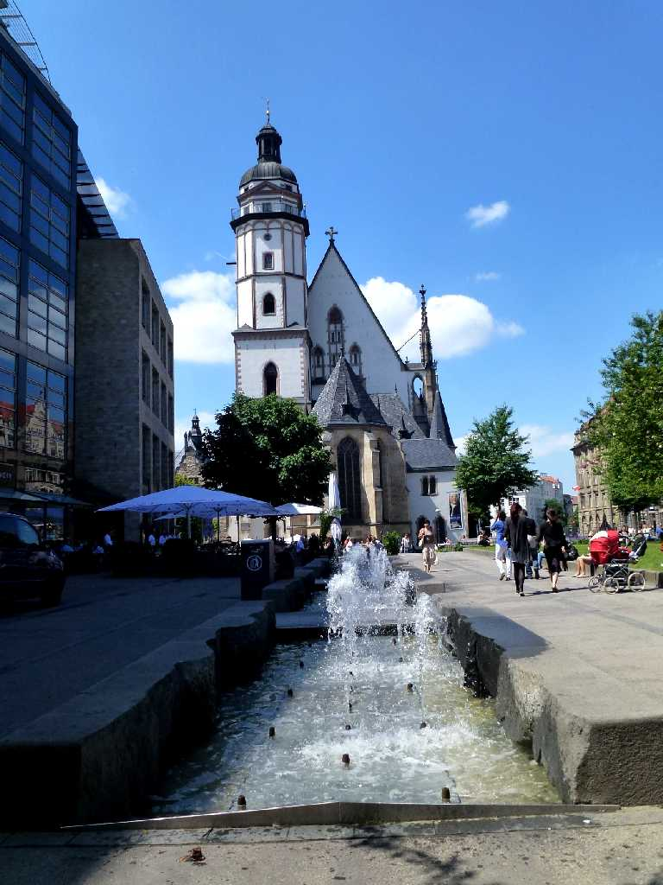
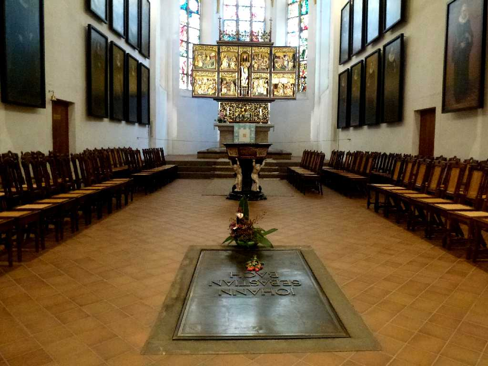
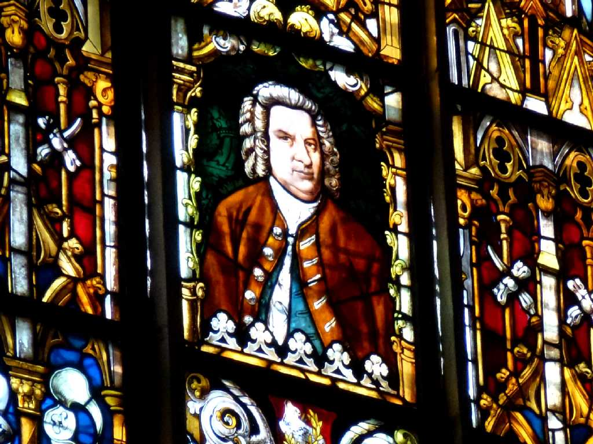
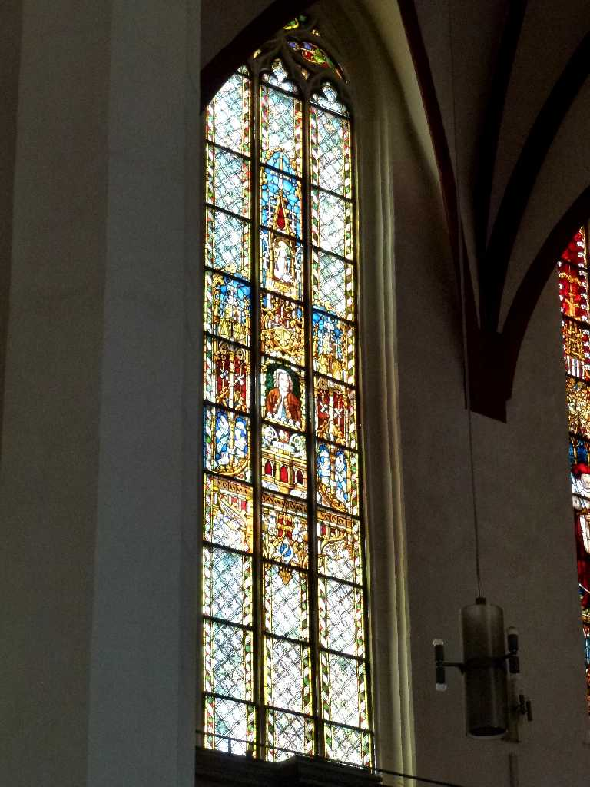
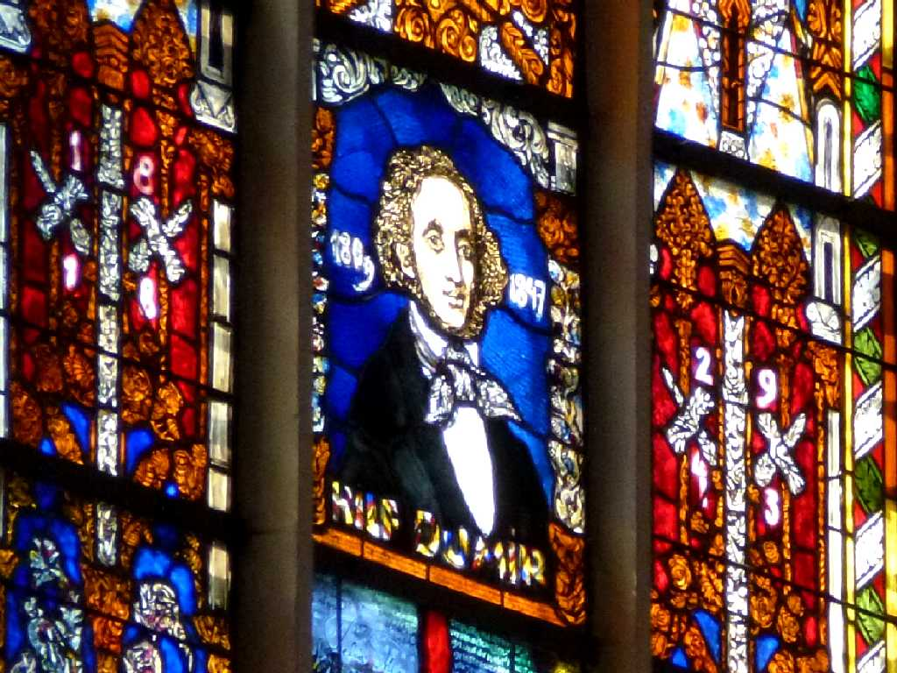
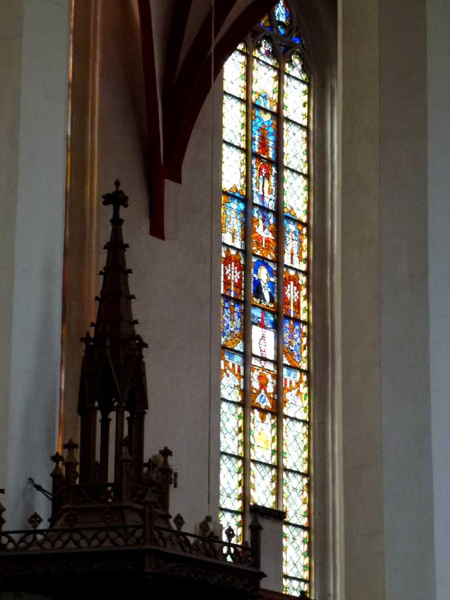
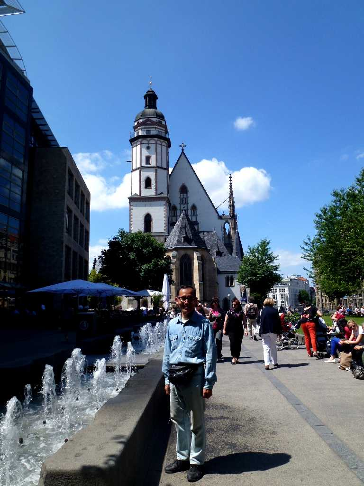
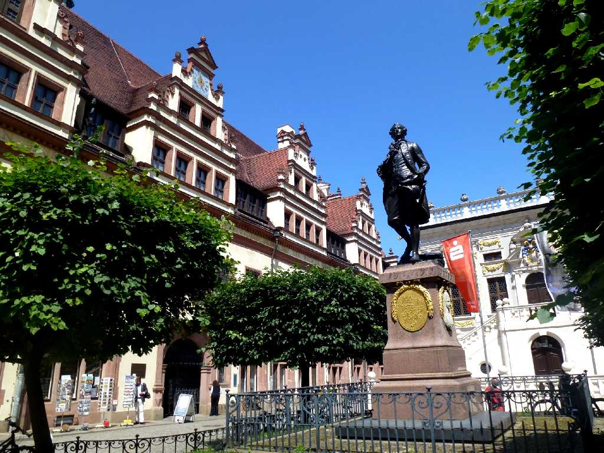

Thomaskirche Leipzig
７世紀この街を創ったソルブ人の言葉で菩提樹に由来し中世から交易の街として商況と金融で栄えた

Bach Thomaskirche
１２１２年に創られた聖トーマス教会はバッハが１７２３年から５０年にかけてオルガン奏者と合唱団の指揮者を勤めたバッハゆかりの教会で１９４９年に祭壇の前にお墓が移された
 
Bach Glas Thomaskirche
 
Mendelssohn Glas Thomaskirche

June 12 2014 Thomaskirche

Goethe Alte Rathaus
旧市庁舎裏手の１８歳頃の若きゲーテ像